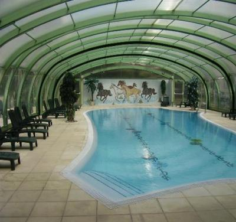

AC = Camping acceptant les camping-cars de :
VILLENEUVE LOUBET
(N° 306)
Accès/adresse :
5 avenue des Rives
Camping de l'Hippodrome ***
06270 VILLENEUVE LOUBET
Camping de l'Hippodrome ***
06270 VILLENEUVE LOUBET
Latitude : (Nord) 43.64185° Décimaux ou 43° 38′ 30′′
Longitude : (Est) 7.13792° Décimaux ou 7° 8′ 16′′
Tarif : 2013
C-C, 2 personnes : 15,80 à 33,80 €
Électricité : 5,50 €
Type de borne : FLOT BLEU
Services :


Piscine
Solarium
Autres informations :
Ouvert toute l'année
Réservations en saison
A 250 m des plages
Tel : +33(0)493 200 200

Le 24/11/2012 par Marietger
de
jeannotindre
le 27/02/2014 :
je confirme que l'aire est bruyante mais rien à dire sur les équipements c'est parfait.Le prix est abordable vu la région mais c'est un budget.
Pour le carnaval de Nice c'est idéal le bus est à proximité
je confirme que l'aire est bruyante mais rien à dire sur les équipements c'est parfait.Le prix est abordable vu la région mais c'est un budget.
Pour le carnaval de Nice c'est idéal le bus est à proximité
de
Daisy
le 04/04/2013 :
Equipements "nickel" mais situation plutôt bruyante.
Equipements "nickel" mais situation plutôt bruyante.
de
jpg
le 14/03/2010 :
De passage sur la commune. L'aire est sur le camping, très bien tenu. L'électricité est très chère et pas facile à avoir. Sinon, le prix par jour est très, très élevé, mais il y a du confort et le camping est bien placé.
De passage sur la commune. L'aire est sur le camping, très bien tenu. L'électricité est très chère et pas facile à avoir. Sinon, le prix par jour est très, très élevé, mais il y a du confort et le camping est bien placé.